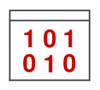

Thème 3 : Les données⚓︎

L'informatique étant le traitement automatique de données, ces données constituent la matière première de toute activité numérique.
Afin de permettre leur réutilisation, il est nécessaire de les conserver de manière persistante.
Les structurer correctement garantit que l’on puisse les exploiter facilement pour produire de l’information.
Expériences de traitement⚓︎
Découvrir la manipulation de données sur la plateforme France-IOI avec les codes :
4xrbqtn3pour l'activité n°1 ;d4hy533rpour l'activité n°2 ;a9tmdc89pour l'activité n°3 ;
Solutions
from database import *
table_regions = loadTable("regions")
displayTable(table_regions)
from database import *
table_grandes_villes = loadTable("grandes_villes")
displayTableOnMap(table_grandes_villes,"ville","longitude","latitude")
Notions et vocabulaire à retenir
- Une collection est un ensemble d’objets (concrets ou abstraits) dont on collecte des données, partageant les mêmes descripteurs.
- Un objet est un élément de cette collection.
- Un descripteur désigne une caractéristique de l’objet concerné par la donnée.
- Une valeur est l’information elle-même, c.a.d. la donnée.
- Le type d’une valeur est la nature de cette information. On ne peut comparer des données que si elles sont de même type.
Exemple
Si on s’intéresse aux données gérées par une bibliothèques.
- L’ensemble des usagers de la bibliothèque est une collection ; L’ensemble des livres en est une autre.
- Chacun des livres est un objet de cette collection.
- Le titre comme le numéro ISBN sont des descripteurs de la collection livres.
9782070319527est la valeur du nombre correspondant au numéro ISBN d'un livre dont le titre à pour valeur la chaine de caractères"Les fleurs du mal"(nombre et chaine de caractères sont des types de données).
- Si une donnée concerne une personne, on dit que c’est une donnée personnelle. Le règlement général sur la protection des données, R.G.P.D., encadre le traitement des données personnelles sur le territoire de l'Union européenne.
- Une métadonnées est une donnée qui renseigne sur une donnée. Un fichier numérique est accompagné de métadonnées qui le décrivent.
- On structure les données pour retrouver facilement des informations et les traiter automatiquement. Une table est un ensemble de données organisées sous forme de tableau avec en colonnes les descripteurs et en lignes les différents objets enregistrés dans la table.
- Les opérations de traitement consistent à filtrer selon un critère ou une combinaison de critères (OU, ET, NON), trier pour réordonner les objets dans la table, calculer...
- Structurer les données sur plusieurs tables permet d'éviter les redondances et de ne mettre à jour qu'une seule fois chaque valeur en cas de changement.
- En croisant (fusionnant) deux tables ayant un descripteur commun (une jointure), on peut générer des informations nouvelles...
Mesure PIX⚓︎
Mesurer vos compétences dans le domaine des données structurées en suivant le parcours MWEAGK692 sur PIX ;
Lister dans un [mail], les notions pour lesquelles vous auriez besoin d'explications complémentaires...